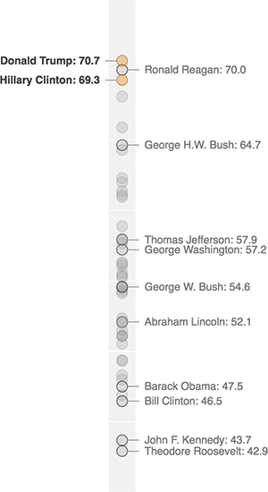

Trump Would Be The Oldest First-Term President Ever
The gray dots on this chart represent each U.S. president and his age at his first inauguration. We’ve highlighted a few of the notable ones. If elected, Trump would be even older than Ronald Reagan was at his first inauguration. Reagan was just days shy of his 70th birthday (technically his age was 69.96). Meanwhile, Clinton would be the second-oldest president ever.
